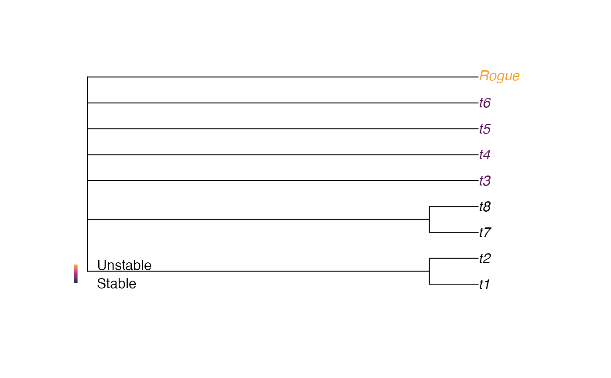

TipInstability() calculates the instability of each leaf in a tree.
Unstable leaves are likely to display roguish behaviour.
TipInstability(
trees,
log = TRUE,
average = "mean",
deviation = "sd",
checkTips = TRUE,
parallel = FALSE
)
ColByStability(
trees,
log = TRUE,
average = "mean",
deviation = "sd",
pal = hcl.colors(131, "inferno")[1:101]
)Arguments
- trees
List of trees to analyse.
- log
Logical specifying whether to log-transform distances when calculating leaf stability.
- average
Character specifying whether to use
"mean"or"median"tip distances to calculate leaf stability.- deviation
Character specifying whether to use
"sd"or"mad"to calculate leaf stability.- checkTips
Logical specifying whether to check that tips are numbered consistently.
- parallel
Logical specifying whether parallel execution should take place in C++.
- pal
A vector listing a sequence of colours to be used for plotting. The earliest entries will be assigned to the most stable tips.
Value
ColByStability() returns a named character vector that assigns a
colour to each leaf in trees according to their stability.
Details
Smith (2022) defines the instability of a pair of leaves as the median absolute divergence in the graph geodesic (the number of edges in the shortest path between the leaves) across all trees, normalized against the mean graph geodesic. The instability of a single leaf is the mean instability of all pairs that include that leaf; higher values characterise leaves whose position is more variable between trees.
Other concepts of leaf instability include
The "taxonomic instability index", as implemented in Mesquite: described by Thomson and Shaffer (2010) as \(\sum\limits_{(x, y), j \neq i}{\frac{|D~ijx~ - D~ijy~|}{(D~ijx~ - D~ijy~)^2}}\), where \(D~ijx~\) is the patristic distance (i.e. length of edges) between leaves \(i\) and \(j\) in tree \(x\).
the average stability of triplets (i.e. quartets including the root) that include the leaf (Thorley and Wilkinson 1999) , implemented in "Phyutility" (Smith and Dunn 2008) ; and related to "positional congruence" measures (Estabrook 1992; Pol and Escapa 2009) .
References
Estabrook GF (1992).
“Evaluating undirected positional congruence of individual taxa between two estimates of the phylogenetic tree for a group of taxa.”
Systematic Biology, 41(2), 172–177.
doi:10.1093/sysbio/41.2.172
.
Pol D, Escapa IH (2009).
“Unstable taxa in cladistic analysis: identification and the assessment of relevant characters.”
Cladistics, 25(5), 515–527.
doi:10.1111/j.1096-0031.2009.00258.x
.
Smith MR (2022).
“Using information theory to detect rogue taxa and improve consensus trees.”
Systematic Biology, 71(5), 986–1008.
doi:10.1093/sysbio/syab099
.
Smith SA, Dunn CW (2008).
“Phyutility: a phyloinformatics tool for trees, alignments and molecular data.”
Bioinformatics, 24(5), 715–716.
doi:10.1093/bioinformatics/btm619
.
Thomson RC, Shaffer HB (2010).
“Sparse supermatrices for phylogenetic inference: taxonomy, alignment, rogue taxa, and the phylogeny of living turtles.”
Systematic Biology, 59(1), 42–58.
doi:10.1093/sysbio/syp075
.
Thorley JL, Wilkinson M (1999).
“Testing the phylogenetic stability of early tetrapods.”
Journal of Theoretical Biology, 200(3), 343–344.
doi:10.1006/jtbi.1999.0999
.
See also
Other tip instability functions:
TipVolatility()
Examples
library("TreeTools", quietly = TRUE)
# Generate some trees with a rogue taxon
trees <- AddTipEverywhere(BalancedTree(8), "Rogue")[3:6]
# Display the strict consensus
plot(consensus(trees), tip.col = ColByStability(trees))
# Add a legend for the colour scale used
PlotTools::SpectrumLegend(
"bottomleft", bty = "n", # No box
legend = c("Unstable", "", "Stable"),
palette = hcl.colors(131, "inferno")[1:101]
)

# Calculate leaf stability
instab <- TipInstability(trees, log = FALSE, ave = "mean", dev = "mad")
# Plot a consensus that omits the least stable leaves
plot(ConsensusWithout(trees, names(instab[instab > 0.2])))